RisingMenswear · Shirts
Bellows flap pocket
Utility shirting moves from workwear into smart-casual, with expanding pockets and buttoned flaps.
- Trims
- Corozo buttons, bartacks
- Fabric
- Washed twill, 200–240 gsm
- Colours
Built for Indian brands, designers and manufacturers. Forecut tracks fashion down to construction details, across ethnic and western wear, footwear, fabrics, embroidery and trims. Every forecast arrives ready to sketch, spec and sample, with prices in rupees.
Free while in testing. Full access to every forecast, no sign-up. Tell us what to improve: hello@forecut.in
Sarees, lehengas, kurtas, bandhgalas, juttis and Kolhapuris, handloom weaves, chikankari, mirror work and gota, plus the western wear Gen Z India is buying. Planned around the Indian calendar, from Diwali and wedding season to summer and the next festive.
A few of the details we're tracking now. Open any season to see every detail, with notes and downloadable cards.
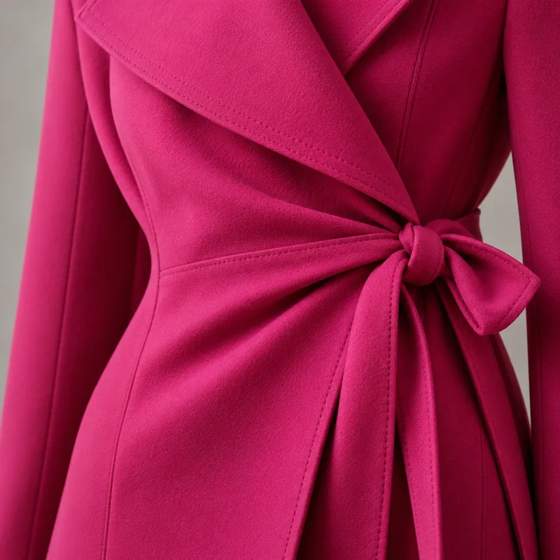
Rising · AW26Asymmetric wrap closures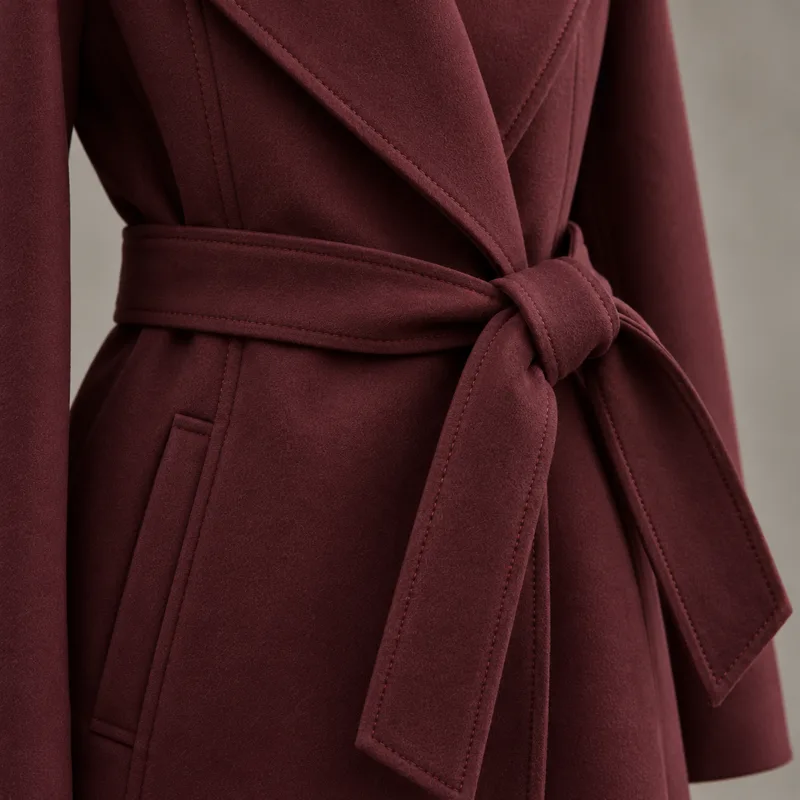
Rising · AW26Belted wrap fronts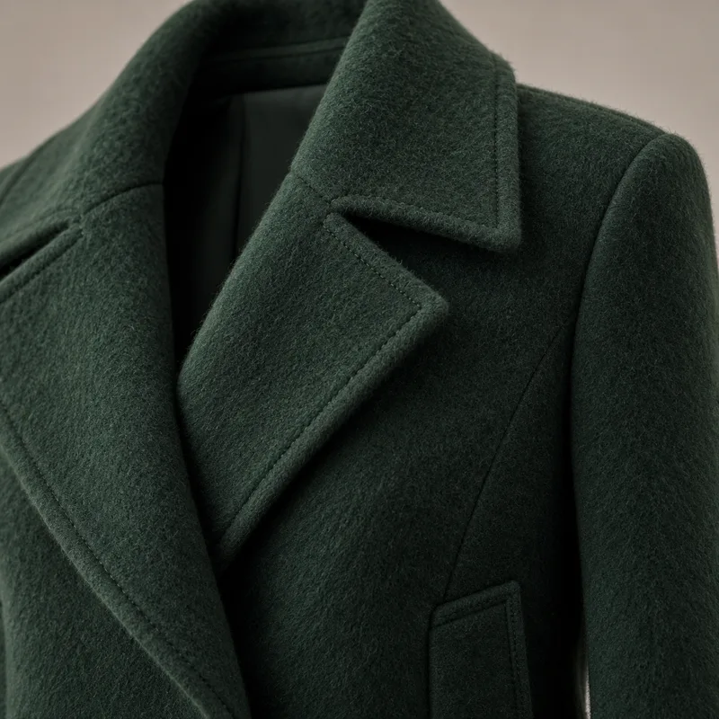
Rising · AW26Brushed wool-cashmere coats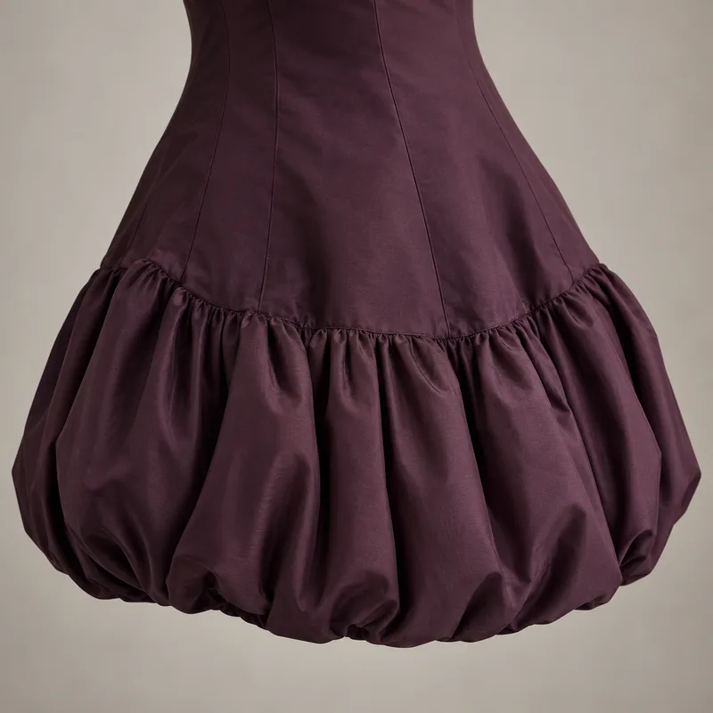
Rising · SS27Bubble-hem dresses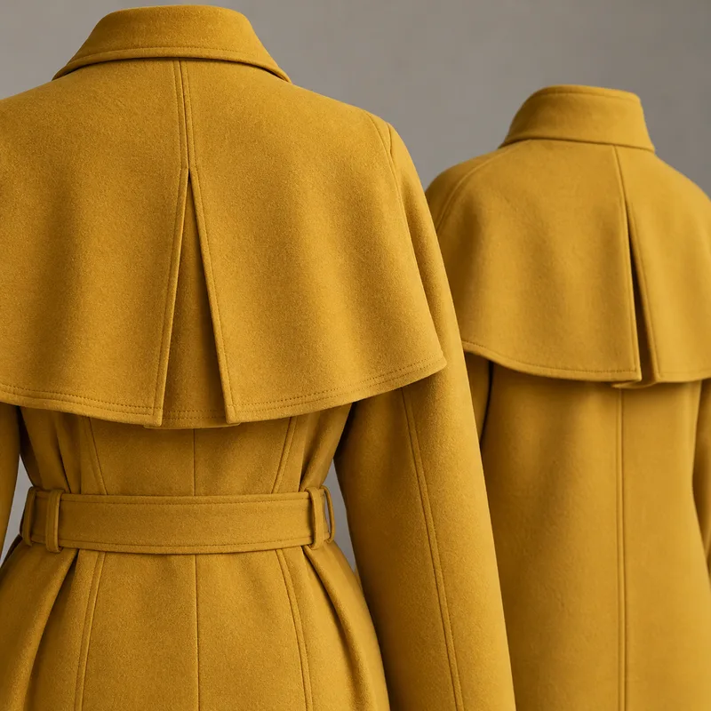
Rising · AW26Cape backs and capelets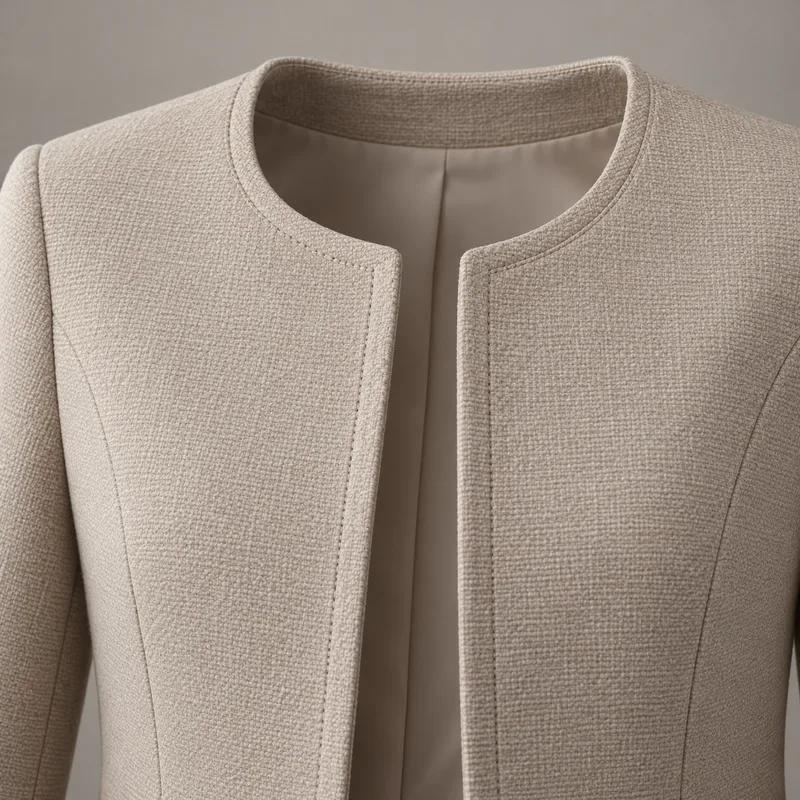
Rising · SS27Collarless cropped jackets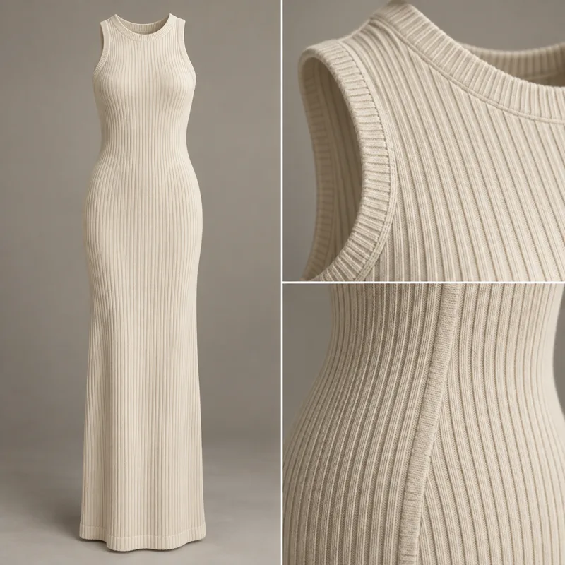
Rising · AW26Column knit dresses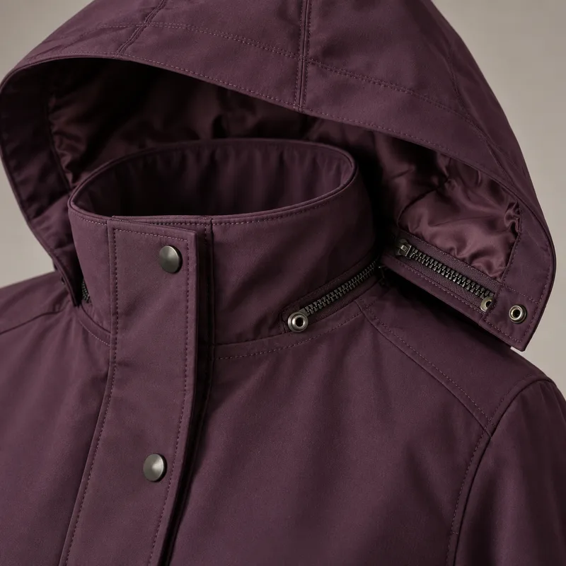
Rising · AW26Detachable hoods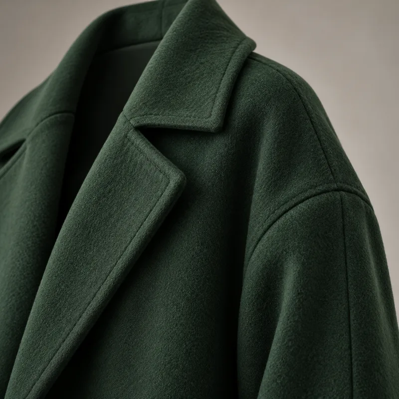
Rising · AW26Dropped, rounded shoulders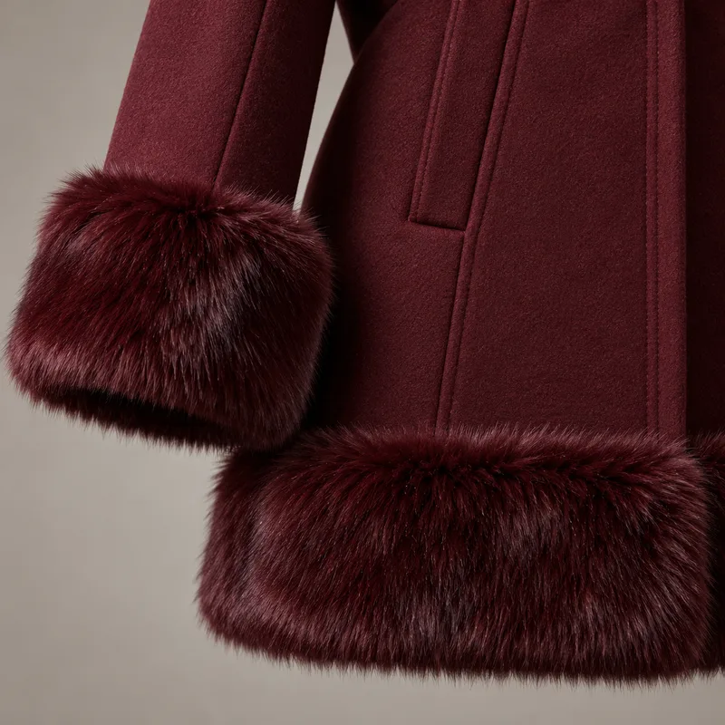
Rising · AW26Faux-fur cuffs and hems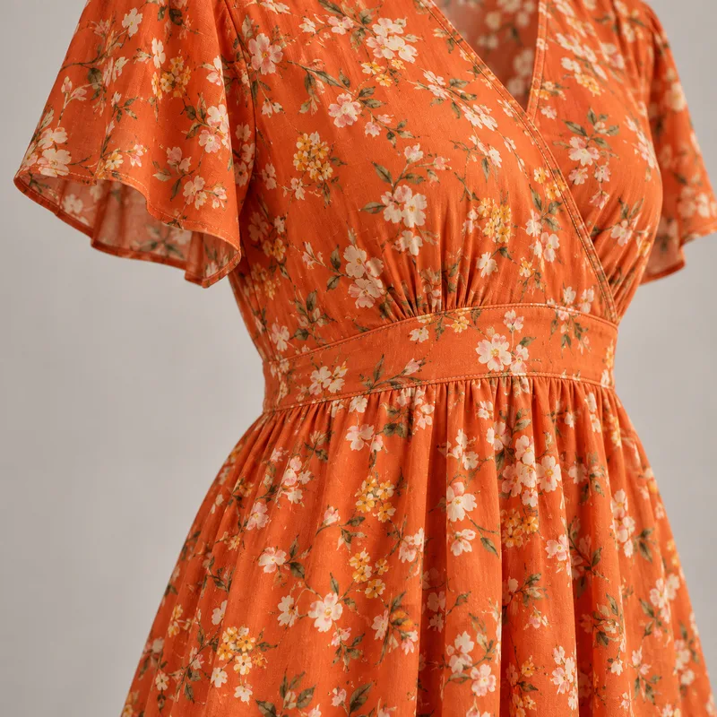
Rising · AW26Floral print midis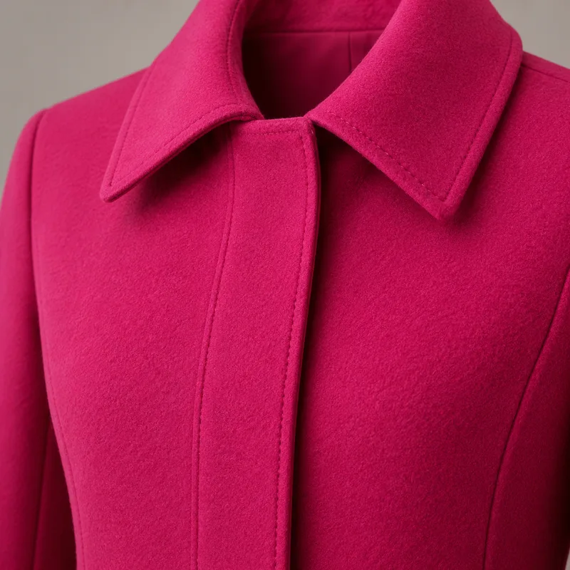
Rising · AW26Hidden-placket overcoats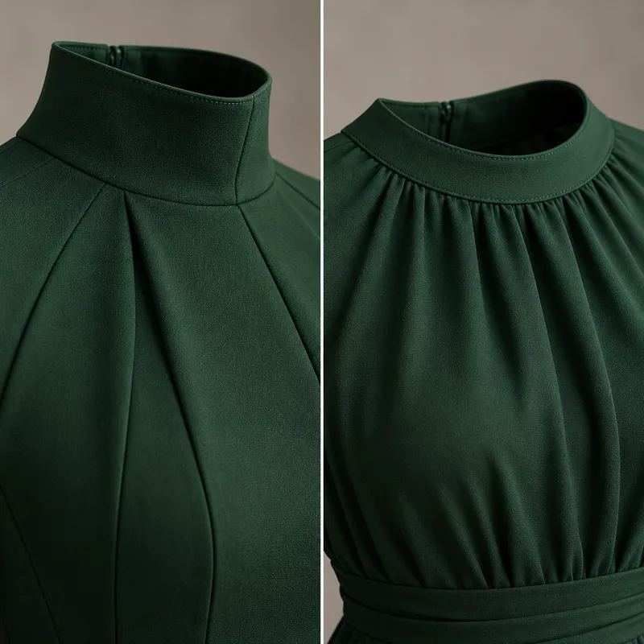
Rising · SS27High necklines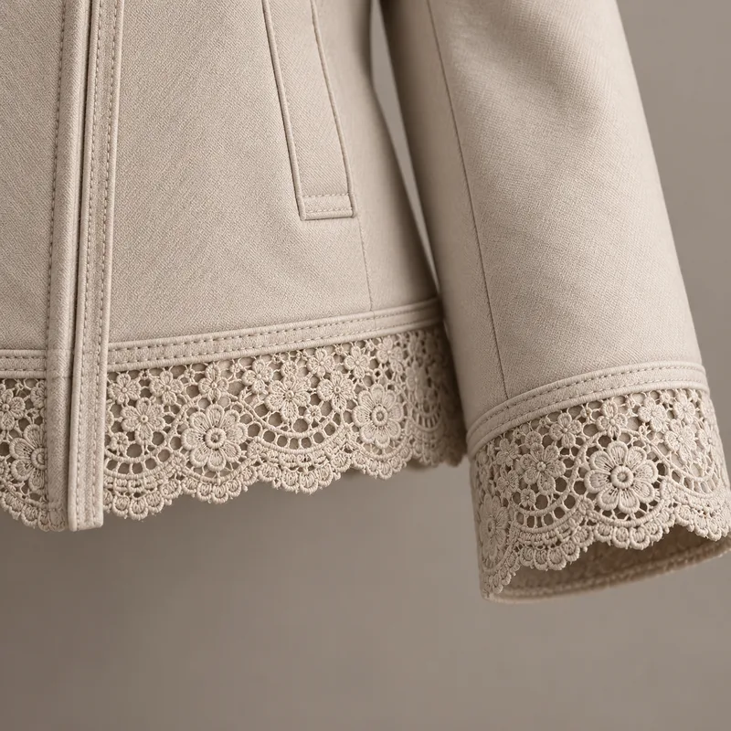
Rising · SS27Lace-trimmed jacket edges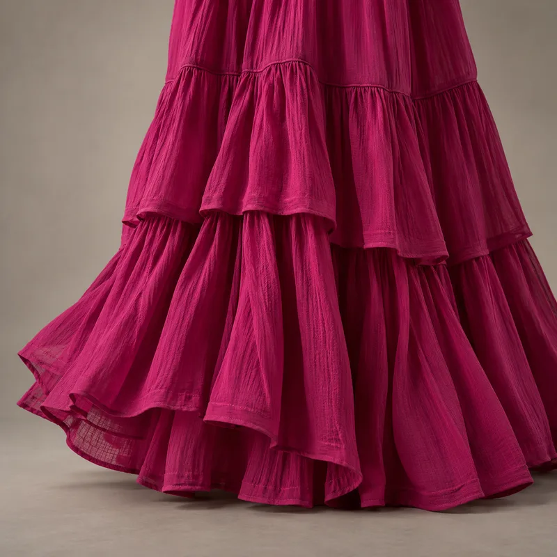
Rising · AW26Moody tiered ruffle maxis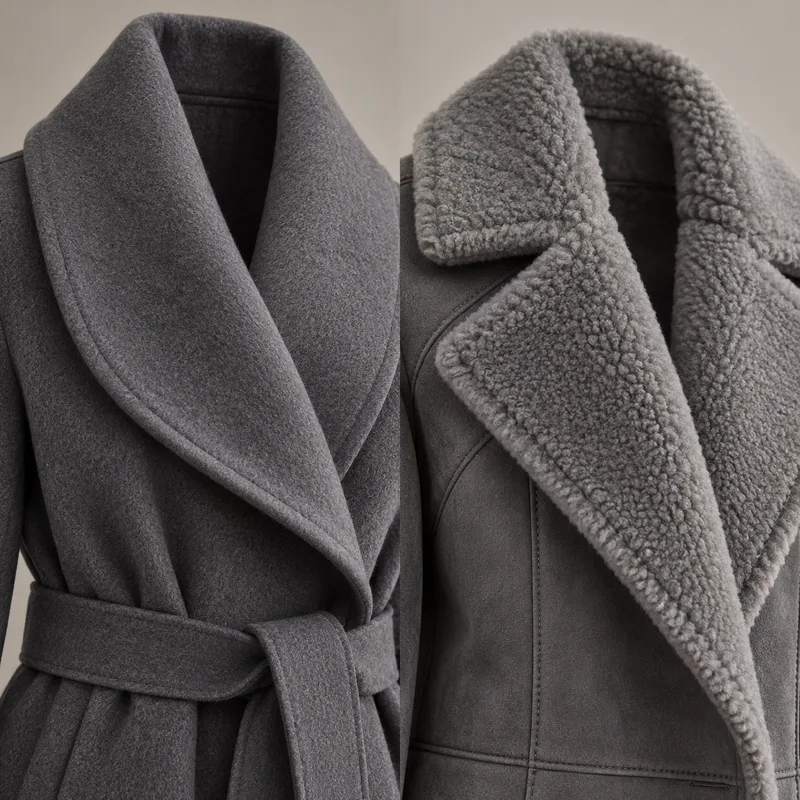
Rising · AW26Oversized shawl and notch collarsGlobal runway and retail signals that reach Indian stores next: the current season, next season, and long-range outlooks through 2028.
Rich, maximal and tactile: big outerwear, sharp tailoring and heavy embellishment.
The waist returns, sneakers give way to elegant shoes, and handcraft moves into everyday shirting.
Early outlook: where SS27 signals are likely to lead. This season is an example projection and will update as runway data arrives.
Long-range outlook: structured clarity and easy movement. Fewer, better pieces with performance comfort, anchored by a warm earth orange. Example projection.
Long-range outlook: functional tailoring and quiet structure for winter, as SS27 handcraft details fade. Example projection.
Follow a detail across seasons to see when to adopt it and when to move on. Example outlook.
| Trend | AW25 | AW26 · now | SS27 | AW27 | SS28 | AW28 |
|---|---|---|---|---|---|---|
| Defined waist | Emerging | Rising | Rising | Peaking | Peaking | Fading |
| Smocking and gathering | – | Emerging | Rising | Peaking | Peaking | Fading |
| Performance-ease details | – | – | Emerging | Emerging | Rising | Peaking |
| Earth orange tones | – | – | Emerging | Rising | Peaking | Peaking |
| Contrast collars and cuffs | Emerging | Rising | Peaking | Fading | Fading | – |
| Sheer layering | Rising | Peaking | Peaking | Fading | Fading | – |
| Fringe and heavy beadwork | Rising | Peaking | Fading | Fading | – | – |
| Chunky lug soles | Peaking | Fading | Fading | Fading | – | – |
AW26 and SS27 directions summarise published runway and trade coverage. The 2028 earth orange follows the forecast 2028 colour of the year. AW27, SS28, AW28 and the tracker are example projections that show how Forecut reports will look.
Each card names the detail, where it's heading, and the trims, fabric and colours that pair with it, so you can move straight to a sketch or tech pack.
Utility shirting moves from workwear into smart-casual, with expanding pockets and buttoned flaps.
Collarless shirting returns in fluid fabrics, with an extended placket replacing the classic point collar.
Strong this season, but already widespread. Use it in core styles and expect it to cool by AW27.
Heavy lug soles are easing toward slimmer, low-profile soles. Reduce depth in new styles.
These cards show the format of a Forecut report. The trends shown are illustrative examples, not live forecasts.
Shapes, lengths and proportions by category.
Collars, cuffs, pockets, plackets, seams and stitching.
Soles, toe shapes, straps and closures.
Buttons, zips, buckles, eyelets and labels.
Fibres, weights, weaves, finishes and washes.
Seasonal colours with core and accent roles.
Runway coverage, street style, search interest and retail launches, gathered every week.
Image analysis identifies construction details, trims and materials, then tracks which are rising, peaking or fading.
Monthly detail cards with pairing suggestions, so your team can sketch, spec and sample faster.
Forecut is in testing, so you get full access free today. Paid plans begin after launch; early testers keep the launch price below.
Per user · one login
Starts with 10 users · one login each
Prices in Indian rupees, from launch. Not charged during testing. Launch prices are for a limited time and may change for new members after launch.
Forecut is free while we test. Leave your email to hear first when plans launch and to reserve the launch price, and tell us what you'd like to see. Or write to us at hello@forecut.in.